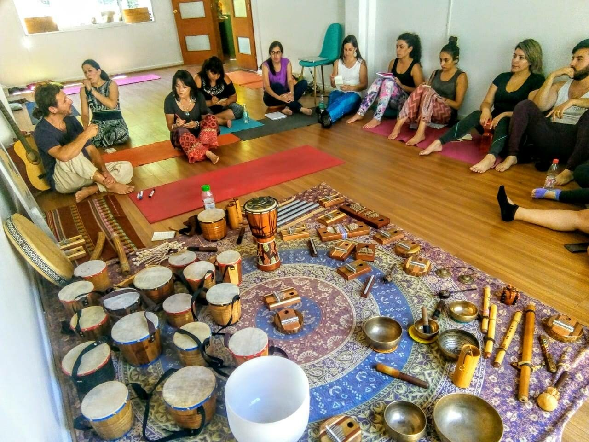

En febrero pudimos compartir la experiencia de aprender cómo utilizar de manera consciente la energía del sonido y distintas formas musicales simples para armonizar, equilibrar e impulsar bienestar en Santiago de Chile.
La sonoterapia infantil adapta el ejercicio sonoterapéutico al trabajo con niños y niñas del primer y segundo septenio (entre los 3 y los 10 años).
La magia de la Terapia de Sonidos:
Considerando al ser humano como una totalidad, comprendemos que el sonido consigue afectar tanto estructuras densas (físicas) como sutiles (emociones, pensamientos) consiguiendo cambiar la frecuencia de éstas a través del fenómeno de resonancia, generando cambios positivos a nivel físico, anímico e incluso espiritual.
Felices de haber completado otra formación, los invitamos a conocer más sobre ella y sus beneficios a través del siguiente link: